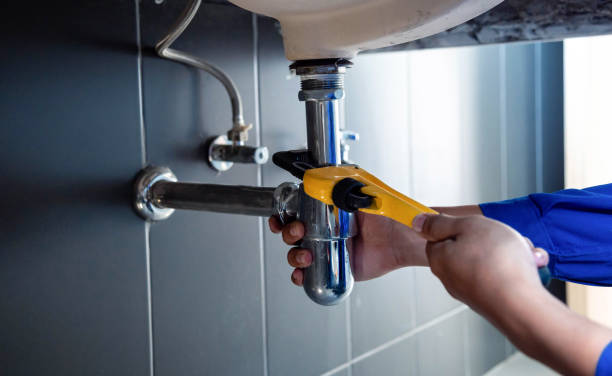

What is the Highest-Rated Plumbing Contractor in Frisco for Reliable Services?
Posted by on 2024-06-07
Selecting the highest-rated plumbing contractor in Frisco for reliable services is a significant concern for homeowners and business owners who need quality plumbing solutions. We will explore how to identify such a contractor and what makes them stand out, rather than pinpoint an individual company, as ratings are subject to change over time.
When looking for the highest-rated plumbing contractor in Frisco, residents often turn to online reviews and testimonials as their starting point. Platforms like Yelp, Google Reviews, Angie’s List, HomeAdvisor, or the Better Business Bureau provide valuable insights into customer experiences with different service providers. These reviews can reveal consistent patterns of performance that help potential customers gauge reliability, expertise, and customer service.
A top-tier plumbing contractor typically stands out due to several key factors:
**1. Expertise and Certification:** The best contractors employ highly skilled plumbers who are not only licensed but also undergo continuous training to stay up-to-date with the latest techniques and regulations. Expertise ensures that they can handle a wide array of problems efficiently.
**2. Experience:** Years of operation within Frisco gives contractors firsthand understanding of common local issues related to weather or municipal water systems which might affect plumbing infrastructure.
**3. Reliability:** Prompt response times, especially during emergencies, is a critical factor that contributes to higher ratings. Contractors should be available 24/7 for urgent situations.
**4. Customer Service:** Exceptional communication skills and courteous interactions are fundamental characteristics of high-ranking contractors. They should clearly explain issues, potential solutions, and costs upfront without hidden fees.
**5. Quality of Workmanship:** A reliable contractor guarantees the quality of their work with warranties or satisfaction guarantees ensuring that any installations or repairs are durable and effective.
**6. Comprehensive Services:** Offering a wide range of services from leak detection to sewer line repair implies versatility and readiness to tackle anything from small fixes to major projects.
**7. Community Reputation:** Aside from online ratings, word-of-mouth recommendations carry substantial weight in determining reliability – if locals consistently recommend a particular service provider; this reflects well on their reputation within the community.
To find the highest-rated plumber in Frizzly at any given time would involve checking current listings across multiple review platforms while considering all these qualities that contribute towards excellence in plumbing services.
It’s essential not just to rely solely on star-ratings but also read through written reviews carefully; sometimes a lower-rated plumber might have had one-off incidents affecting their overall score whereas detailed reviews may reveal consistently stellar feedback about another contractor's professionalism or punctuality despite having fewer stars overall.
Finally remember that your specific needs play an important role when choosing; some plumbers might specialize in residential properties while others have more experience with commercial setups so choose accordingly based on your situation.
In conclusion selecting the right plumber involves thorough research beyond just looking at ratings – it's about finding someone whose attributes align with your expectations for technical skill professionalism quick response times excellent customer care comprehensive offerings strong local reputation backed by solid warranties guaranteeing peace of mind when entrusting them with your home or business’ vital systems.